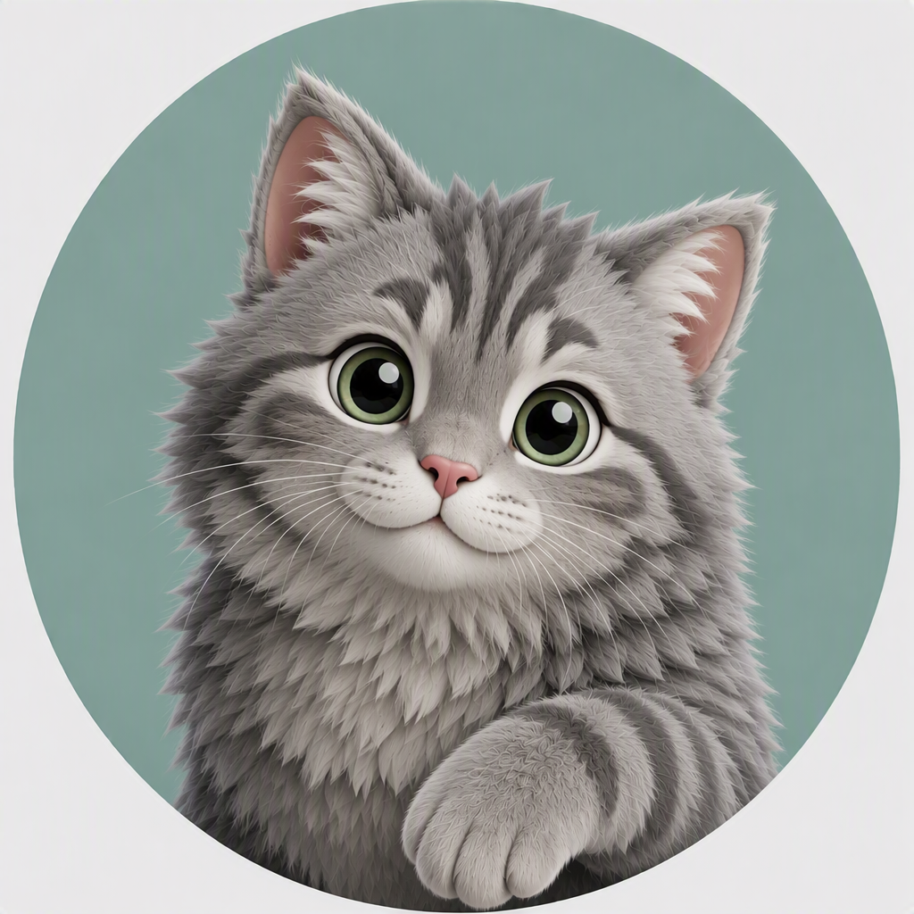
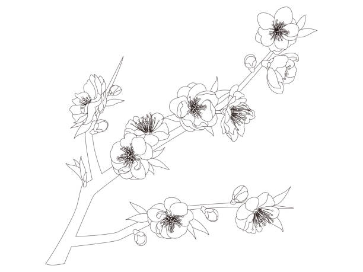
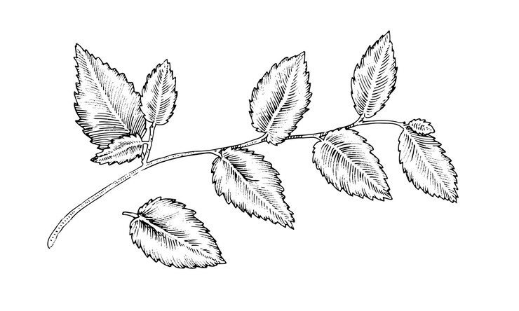
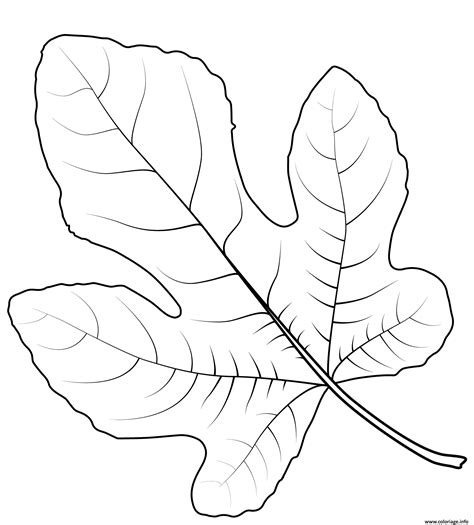
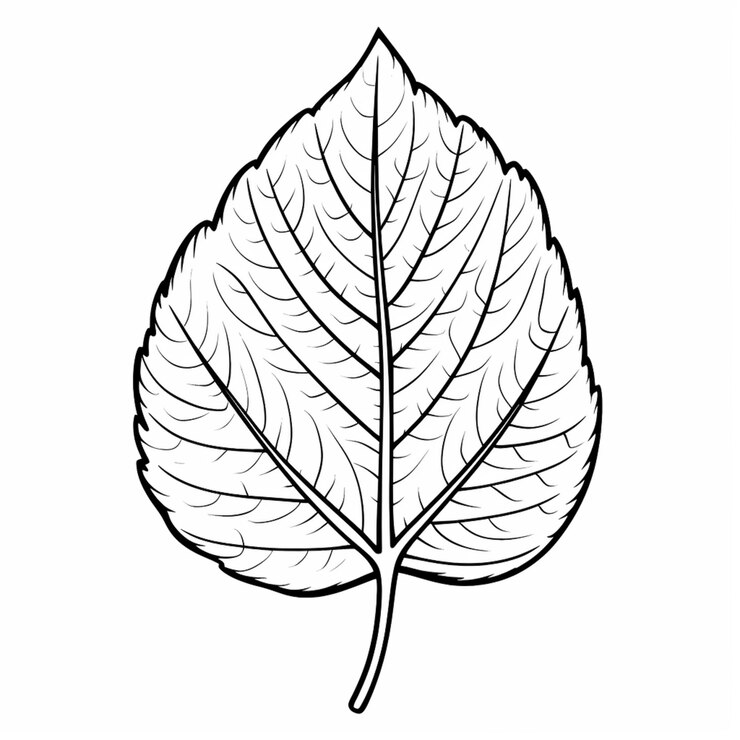
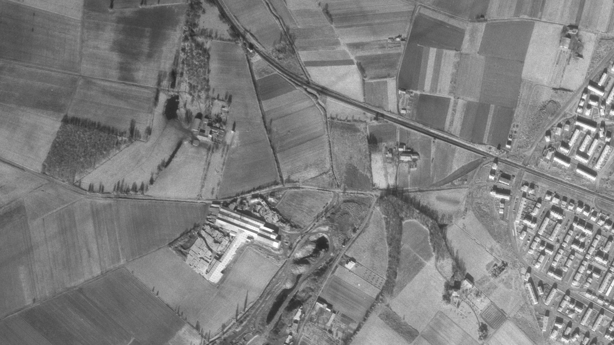
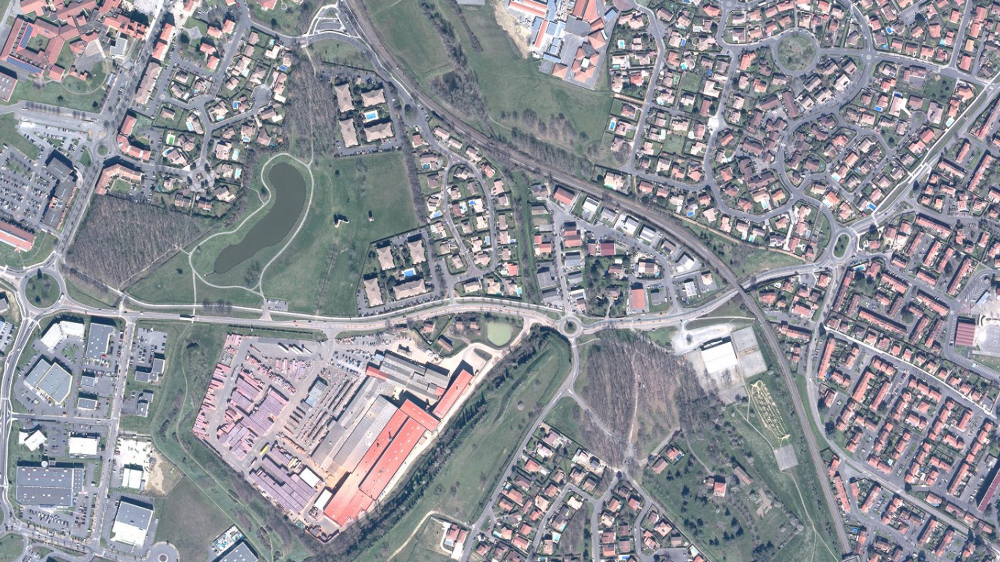

Ce parcours est « mixte » : il alterne des zones naturelles et des zones urbaines où les véhicules circulent. Merci de respecter la tranquillité des résidents dans les quartiers résidentiels et soyez prudents au bord des routes.
L'entrée du parking a été équipée de mobilier qui empêche l'usage par les gros véhicules (camping-cars et camionnettes). Si vous possédez un tel véhicule, vous pouvez vous garer dans la zone de Catchère en face : N 43° 36.770' E 001° 19.185'
Gris-nez Vous êtes qui ? Vous faites quoi ? Pourquoi vous êtes là ?

Malo Voyons Gris-nez, arrête de les importuner. Excusez-le, c'est mon petit frère, il est encore un peu jeune. Moi je m'appelle Malo. Je suppose que vous êtes venus jouer à « Chats Perget » avec nous ? Vous allez voir, c'est très amusant.
Malo Allez ne perdons pas de temps, suivez-nous, c'est par ici.
Malo Et oui, ami randonneur, nous, nous sommes bloqués dans cette application et le temps ne défile pas pour nous comme pour vous… Mais si vous avez eu la bonne idée de venir en août-septembre, alors nous avons une très bonne nouvelle pour vous : les 200 prochains mètres vont être remplis de bonnes mûres sauvages bien juteuses ! Vous pourrez même en ramener chez vous tant il y en a.
Malo Et si ce n'est pas la saison, tant pis, vous aurez peut-être une autre chance de vous régaler plus tard. En attendant en avant, marche. Longeons le Bassac.
Malo Et voilà ! Notre petit passage secret à tous deux. Le Perget est un quartier qui a énormément évolué ces dernières années, mais il y a aussi des choses qui n'ont pas bougé depuis des siècles. C'est le cas de ce croisement entre nature et industrialisation. Quand la voie ferrée est apparue à Colomiers en 1877, il a fallu qu'elle franchisse le Bassac. Alors les ingénieurs de l'époque ont créé un petit tunnel pour que le Bassac puisse continuer à sinuer au même endroit. Et aujourd'hui, même s'il a été rénové depuis, ce même tunnel est toujours en place.
Gris-nez Et nous on s'amuse à jouer dedans !
Malo Chut ! C'est pas une bonne idée pour les enfants !
Le tunnel à l'heure actuelle est réalisé avec quel type de matériau ?
Poursuivez jusqu'au bout du chemin en direction des résidences. Au point suivant N 43° 36.860' E 001° 18.987', répondez à la question subsidiaire.
Dans le jardin de ce particulier se trouve une plante assez fréquente dans le Sud-Est de la France, mais plus rare à Colomiers. Comment se nomme cette plante (le nom générique, pas la variété en particulier) ? Saisissez ce mot ci-dessous :
Malo Au début des années 1980 il n'y avait à l'emplacement de tout ce quartier résidentiel que 4 belles maisons. Avec le développement du quartier, les promoteurs ont bâti tout un ensemble de pavillons pour pouvoir héberger les nouvelles populations. Sous l'influence de l'économie aéronautique grandissante, Colomiers a lancé un grand projet qui incluait un Science Park, la création du premier lycée public de la ville qui a ouvert à la rentrée 1984, et l'aménagement de zones boisées et naturelles.
Gris-nez Et l'installation massive de la zone commerciale !
Malo Non, ça c'était dans les années 2000. Et nous, c'est pas ce qu'on préfère. Pour autant, les maires successifs ont tenu à conserver une partie des lieux à l'identique. Vous imaginez des grands champs à perte de vue avec un immense corps de ferme et un pigeonnier en brique rouge ?
Malo Non ? Et bien on vous y amène.
Poursuivez le chemin ascendant jusqu'au N 43° 36.810' E 001° 18.908' et profitez de la vue sur le Colomiers d'autrefois.
Malo La ville de Colomiers est née vers 1080, du côté de l'ancien fort, pas loin de la place Firmin Pons. Il est fort probable que le Perget ait commencé à être utilisé comme terres agricoles entre le XIIIè et le XVIè siècle. Les Capitouls toulousains rachetaient progressivement les terres columérines pour en faire des résidences de campagne. La ferme que vous avez devant vous (ou ce qu'il en reste) doit, elle, dater du XVIIè et le pigeonnier du début du XVIIIè.
Malo Les archives judiciaires de Toulouse nous disent qu'en 1730 un certain Jacques de Lespinasse et son épouse Laurence de Gimbal étaient alors "Seigneur et seigneuresse du Perget et de Colomiers".
Gris-nez Chat alors ! Bon, ça y est, t'as fini ? On peut jouer à Chats Perget maintenant ?
Malo Si tu veux. Je te laisse leur expliquer la règle du jeu.
Gris-nez Alors c'est très simple, on va s'approcher à pattes de loup du pigeonnier, et quand on arrive au ras du premier pilier, on crie "Bouh !" et là tous les pigeons ont une crise cardiaque ou s'envolent !
Malo Ouais, alors petite précision, si vous êtes ornithophobes : le pigeonnier est encore copieusement habité aujourd'hui. Donc vous n'êtes pas obligés de suivre les conseils du petit !
Cabia Non mais ça va pas de faire sursauter les gens comme ça !
Gris-nez T'es pas un pigeon toi !
Cabia Ah ça non ! Une pie jaune, à la limite, avec les taches de peinture.
Gris-nez Pourquoi t'es là ? T'es qui ?
Cabia Je me nomme Cabia, je suis une pie, et je suis venu chercher ici la quiétude et l'inspiration pour mes prochaines œuvres picturales. Mais tout ça c'était avant que tu arrives.
Malo Pardonnez-le il est un peu "chat-huteur".
Cabia Sais-tu jeune impertinent, que tu contemples ici les restes d'une demeure fortunée ? Car ce n'est pas un, mais bien deux pigeonniers que comptait cette ferme. Le premier que voici, et le deuxième tout en haut à gauche de la construction.
Cabia A une époque où la colombine (qui a donné son nom à Colomiers) était l'engrais naturel le plus efficace pour cultiver la terre, imagine la richesse de ce domaine.
Gris-nez Je vois surtout qu'il y a de la fiente partout par terre ! Beurk.
Cabia Il vaut toujours mieux ça que des grosses usines d'engrais industriel. Non ?
La fiente de pigeon semble avoir été appréciée par un arbre qui a élu domicile depuis quelques années au ras du pigeonnier. D'après la forme de ses feuilles, cet arbre est un ? Sélectionnez la bonne réponse qui vaut B :

Pêcher

Poirier

Figuier

Pommier
Indice : Si notre arbre n'a plus de feuilles, reprenez l'indice précédent. Dans le nom de la plante, une lettre se répète 2 fois. Quelle est cette lettre, à quelle place se trouve-t-elle dans l'alphabet ? C'est le numéro de la bonne réponse.
Malo Allez, si vous n'avez pas eu de chance avec les mûres, vous pourrez peut-être déguster quelques fruits de cet arbre, il est d'une variété tardive et donne du fruit au mois de septembre.
Cabia Vous savez ce qui me plait ici ? C'est que l'art a aussi réussi à trouver sa place.
Cabia Quand la ville a décidé de repenser complètement tout le quartier, la ferme était alors dans un état de grand délabrement et dangereuse pour les passants. Il a été décidé de la détruire et de ne conserver que ces deux pans qui donnaient un très bel aperçu de l'édifice. Le pigeonnier a lui aussi été conservé et restauré.
Gris-nez Et les peintures aussi elles étaient d'origine ?
Cabia Oh, non ! Elles sont toutes récentes. Elles ont été réalisées en juin 2025 par l'artiste Azek. Il faut dire que jusque-là les fenêtres étaient murées avec du béton pour solidifier l'ensemble, et ce n'était pas très esthétique. Regardez-moi ces deux photos, vous verrez la différence !
Malo Moi j'aime beaucoup les trompe l'œil. De loin on croirait vraiment que la porte en bas est une vraie.
Gris-nez Qu'est-ce qu'on fait maintenant ?
Malo On va aller au bord de l'eau continuer la balade.
Cabia Bon, moi je vais rester là. J'ai un super perchoir juste derrière ce mur. De là je peux observer toute la zone. Et j'ai l'impression que je suis pas le seul !
Avant de partir, répondez à cette question. Sur le mur de droite, au premier étage, à la fenêtre de droite, un animal a trouvé place devant le bac de fleurs jaunes. Quel est cet animal ? De combien de lettres se compose son nom ?
Traversez maintenant ce qui reste du corps de ferme soit par la porte de gauche (dans ce cas pensez à faire un petit coucou à Cabia et à la caméra de télésurveillance), soit par celle de droite. Descendez jusqu'au point N 43° 36.854' E 001° 18.811' puis continuez à longer l'étendue d'eau jusqu'au point suivant.
Jeanine Ah, tiens, les jeunes loups ! Encore en train de faire peur aux pigeons ?
Malo Ben oui, tu sais bien, on est toujours prisonniers du même scénario, donc forcément… Je suppose que tu vas encore nous raconter plein de trucs sur le vieux Colomiers, comme d'habitude.
Jeanine Et oui ! Car il y a 100 ans, la ville ne ressemblait pas du tout à cela. Figurez-vous qu'il n'y avait ici que des champs à perte de vue. Des champs, des champs, une ferme, et une petite usine qui fabriquait des briques. Mais on y reviendra tout à l'heure.
Jeanine Mais il y a bien plus de temps que ce bâtiment se trouve ici. Le lieu "Perget" est déjà mentionné dans un acte de 1274, et en 1573 un Raspaud, (du même nom que le "château de Raspaud" dans le vieux centre de Colomiers) Seigneur du Perget et capitoul de Toulouse, marie sa fille à un Goyrans (du nom de la ville au Sud-Est de Toulouse). Au siècle suivant c'est le Seigneur de Lespinasse (du nom de la ville au Nord de Toulouse), également capitoul de Toulouse, qui devient propriétaire.
Gris-nez En gros, Colomiers appartenait aux Capitouls toulousains.
Jeanine Eh oui ! C'est assez anachronique, mais Colomiers a TOUJOURS été la banlieue de Toulouse. En 1096, l'église de Colomiers est donnée à l'abbaye de Saint-Sernin. En 1192 une partie des biens et des droits issus de la seigneurie de Colomiers passe aux mains des Villeneuves, Capitouls. Vers 1200, Raymond Guillaume Durand, capitoul de Toulouse, achète la part qui reste à Saint-Sernin, puis acquiert quelques années plus tard la part des Villeneuve. À son décès, il possède ainsi la moitié de la seigneurie de Colomiers.
Malo Et ça s'arrête quand ?
Jeanine Jamais ! Enfin, si à la Révolution, le 4 août 1789. En 1313, on sait que les possessions appartiennent pour moitié au Roi et que le reste est divisable, vendable, transmissible, comme dans une copropriété, en autant de parties que l'on souhaite et qui seront toutes des co-seigneuries. Chaque acquéreur de terre obtient sa part de seigneurie. En 1725, Colomiers compte 21 coseigneurs et un certain Bousquet dénommé "engagiste", c'est-à-dire que le Roi lui-même a décidé d'engager ses droits seigneuriaux auprès d'un particulier.
Gris-nez Je comprends plus rien !!!
Jeanine Rassure-toi pour les gens de l'époque le système fonctionnait, mais il pouvait devenir franchement pénible à gérer. Ce qu'il faut retenir, c'est que d'une part il y avait un certain prestige à avoir une terre à Colomiers. On n'achetait pas une ferme, on achetait une situation sociale. Et d'autre part, au bout d'un certain temps, n'importe qui avec de l'argent pouvait acquérir cette part de prestige, y compris un certain Bacqué, descendant de forgerons de Colomiers, qui achète un denier de justice et obtient ainsi certains privilèges de coseigneur ou encore Jean Noguiès maître boulanger toulousain qui deviendra propriétaire du Perget.
Jeanine Et quand on comprend cela, on ne regarde plus du tout Colomiers pareil : le château de l'Armurier, le château du Cabirol, celui du Falcou, d'En Jacca, de Franc… La ville porte encore des centaines d'années après la trace de ce fonctionnement.
Malo D'accord, mais il n'y a plus de chatelains qui donnent des ordres aux autres depuis longtemps, non ?
Jeanine En sommes-nous vraiment si sûrs ? Emile Calvet a été maire de Colomiers de 1934 à 1944. Il était propriétaire du Château des Tourelles, rue du Prat. Son successeur Eugène Montel, maire de 1944 à 1966 résidait chez son gendre au château de l'Armurié, et Alex Raymond, maire de 1966 à 2001 était propriétaire du château du Falcou… Alors les jeunes, qu'est-ce que vous en dites ?
Malo Ouahou ! J'avais jamais fait attention à tout ça moi.
Pour vous remettre de toutes ces informations, vous pouvez vous asseoir sur un banc. Profitez-en pour regarder la nature autour de vous, et plus particulièrement les saules pleureurs qui bordent cette partie du lac, combien y en a-t-il regroupés juste devant vous ?
Continuez le tour du lac sur 100m environ jusqu'au prochain point.
Gris-nez Le tunnel qui relie le Perget à Pibrac ? Il paraît qu'il y a un trésor dedans !
Jeanine Oui, c'est ça ! Un tunnel et une vierge en or aussi, jetée dans un puits à la Révolution pour la mettre à l'abri des révolutionnaires !
Malo Mais alors c'est vrai ces histoires ??
Jeanine Absolument pas ! Ou en tout cas il y a très peu de chances que ce soit le cas. Mais alors me direz-vous, pourquoi certains columérins parlent encore de ces histoires ? Allez, je vais vous raconter tout ça !
Jeanine En 1962, un certain Robert Charroux publie un livre intitulé "Trésors du monde enterrés, emmurés, engloutis".
Gris-nez Chat roux ! J'aime bien ce nom.
Jeanine C'est même pas son vrai nom ! Il se nommait Robert Grugeau, et il est aujourd'hui considéré comme ayant diffusé des théories pseudo-scientifiques, pseudo-historiques et suprémacistes blanches. Pas vraiment recommandable le petit Robert. Bref dans son bouquin de 1962, il a listé à la fin 192 des plus beaux trésors de France, dont on pense encore aujourd'hui qu'aucun n'a réellement existé.
Jeanine En 135ème position, il a noté "Perjet : souterrains du château. Entre Pibrac et Colomiers", et en 136ème position : "Pérouze : vierge en or. Abbaye en Dordogne". De là est née une légende urbaine : il y aurait une vierge en or cachée quelque part dans un souterrain de l'ancienne ferme du Perget…
Gris-nez Ah, et c'est pas le cas ?
Jeanine Il y a peu de chances, non. Mais Colomiers bénéficiait déjà d'un terreau important pour les légendes autour des souterrains.
Jeanine Les anciens columérins se souviennent qu'avant la destruction du château des Raspaud, il y avait un escalier qui descendait dans le sol vers on ne sait trop quoi. Il avait été muré pour des raisons de sécurité mais certains pensaient que c'était peut-être pour cacher quelque chose. Et comme par ailleurs quelques centaines de mètres plus loin au niveau du parc Duroch, on retrouvait également ce même type d'escaliers qui s'enfonçaient dans le sol, la légende courait que les deux lieux étaient reliés par des souterrains.
Gris-nez Ah, et c'est pas non plus le cas ?
Jeanine Je veux pas t'empêcher de rêver, mais quand en 1976 la mairie a décaissé la terre sur plus de 10 mètres de hauteur pour mettre en place la trémie qui mène au bas de la ville, on n'a jamais retrouvé quoi que ce soit qui relie les deux endroits.
Jeanine Et quand tu penses au ballet des bulldozers qui se sont succédés ici pendant des mois, s'il y avait eu un souterrain, il y a de fortes chances que les travaux se soient cassé le bec dessus à un moment donné…
Malo Dommage. Moi j'aimais bien l'idée qu'il y avait un trésor caché quelque part…
Jeanine Et bien respire un grand coup et tu verras ! Il y a un trésor autour de toi, ça s'appelle la nature.
Jeanine Allez, suivez-moi j'en ai pas fini avec la visite.
Avant de poursuivre plus loin, il pourrait vous prendre l'envie de faire un peu d'exercice. Si vous suivez les instructions sur le panneau du parcours santé, quel genre d'exercice devriez-vous faire à cet endroit précis (activité en 6 lettres, qui commence et finit par la même lettre) ? Dans l'alphabet, à quelle place se trouve la deuxième lettre du mot ?
Jeanine Ça, c'est la canalisation qui permet aux eaux du secteur de venir remplir le lac.
Malo Tu veux dire que c'est pas un lac naturel ?
Jeanine Oui, et non. En fait c'est un peu plus compliqué que ça. La ferme du Perget disposait d'une mare originelle. Ce n'était pas un "lac" naturel au sens géologique du terme, mais plutôt une réserve d'eau agricole, plutôt un lac "collinaire" récupérant naturellement l'écoulement des eaux de pluie.
Jeanine La quasi-totalité des grandes fermes et domaines agricoles possédaient ce type de point d'eau. Il était situé dans la déclivité naturelle du terrain et servait à l'irrigation des cultures, à l'abreuvement des bêtes, ou de vivier. Il faisait partie intégrante du fonctionnement de la ferme.
Jeanine Ce que vous voyez là est le résultat de l'urbanisation de la zone après la destruction de la ferme. A la fin des années 1990, les urbanistes en charge du projet ont réutilisé la topographie existante. Au lieu de reboucher l'étang de la ferme, ils se sont servi de ce point bas naturel. Ils ont surcreusé, reprofilé et considérablement agrandi l'ancien point d'eau agricole.
Jeanine L'objectif de cet agrandissement massif était de le transformer en un "bassin d'orage" moderne. Avec la construction de la zone commerciale et des centaines de logements de la ZAC, les sols ont été imperméabilisés par le béton. Il fallait un réceptacle géant pour recueillir les eaux de pluie et éviter les inondations.
Malo Et ça, ça en fait de l'eau qui s'écoule.
Gris-nez Ouais, c'est cool…
Jeanine Tenez, j'ai des vieilles photos d'il y a 60 ans. Vous voyez la différence de taille entre avant et après ? On voit aussi l'urbanisation qui s'est installée, et on voit aussi que la voie de chemin de fer a été déviée pour passer plus au sud de la ville.
Le Perget, hier et aujourd'hui
Faites glisser le curseur pour comparer les deux époques


1965Aujourd'hui
Gris-nez Et les bâtiments en bas qui s'agrandissent, c'est quoi ?
Jeanine Ça c'est la briqueterie ! Je vais vous expliquer tout ça un peu plus loin.
Avant de partir, saurez-vous compter les barreaux métalliques qui sont face au lac ? Juste ceux devant vous, pas les côtés.
Dirigez-vous à présent jusqu'au point N 43° 36.747' E 001° 18.699'. Traversez prudemment la voie cycliste, puis la route au passage clouté. Arrivés à N 43° 36.735' E 001° 18.698', prenez le chemin de gauche, celui qui monte, et poursuivez jusqu'au point suivant.
Jeanine J'étais une toute petite tortue quand Paul Gélis a racheté en 1924 une petite briqueterie artisanale avec sa femme, elle-même fille de briquetier. Pendant 3 générations, avec leur fils Elie d'abord, puis les trois fils d'Elie dans les années 1960, l'exploitation de molasse argileuse va se poursuivre inlassablement. Il faut dire que la construction des logements d'une ville qui a multiplié sa population par 40 a forcément amené à consommer de la brique et des tuiles !
Malo Mais pourquoi ici précisément ?
Jeanine Si le premier briquetier s'était mis là, il y avait une bonne raison : le sous-sol est idéal pour produire des briques. Toute cette zone, ainsi que les quatre autres sites qui seront achetés par la suite de l'autre côté de la nationale 124 (Dumaine I, II, III et IV) fournissent de l'argile d'excellente qualité.
Malo Mais pourquoi on ne voit pas de machines qui creusent ou de fours qui chauffent ?
Jeanine Parce que l'extraction sur ce site a cessé depuis bien longtemps. La loi ne permet pas de creuser à plus de 60 mètres de profondeur. En 1925, la carrière extrayait 1.200 tonnes par an. En 1984, on était déjà à 457.000 tonnes ! Il a fallu aller creuser ailleurs. Le site ici sert simplement au stockage des matériaux et à la présentation des produits. Les pelleteuses creusent désormais à quelques kilomètres d'ici.
Gris-nez Et c'est toujours M. Gélis qui travaille ?
Jeanine Non, la famille a tout revendu en 1989 à Imérys. Mais il y a un détail que j'aime beaucoup : Jean-Pierre Gélis, un des trois fils, a recréé ensuite une petite entreprise à Empeaux, à la frontière du Gers afin de fabriquer de nouveau les briques foraines traditionnelles que fabriquaient ses grands-parents.
Malo La boucle est bouclée.
Jeanine Exactement. Mais nous n'avons pas encore bouclé la nôtre, alors on repart sans trainer !
Si vous tournez le dos à la briqueterie, la zone industrielle s'étend devant vous. Parmi toutes les enseignes de magasins que vous pouvez voir, une seule d'entre elles est écrite « à l'envers » pour vous. Quel est le nom de cette enseigne qui est aussi un métier ? Quelle est la première lettre de ce métier ? Quelle est la place de cette lettre dans l'alphabet ?
Indice : vous avez du mal à trouver ? Pensez à Jean Noguiès.
Continuez sur le chemin jusqu'au point suivant. Attention si vous êtes en vélo (ou même à pied) les arbustes sont assez resserrés par endroits et peuvent se montrer griffants.
Jeanine J'en ai pas tout à fait fini avec la famille Gélis, car il y a une petite anecdote qu'il faut absolument que je vous raconte !
Jeanine En 1972, lors d'excavation à la pelle mécanique, Monsieur Gélis est appelé par un de ses employés qui vient de faire une découverte étrange : il y a des fragments de poteries à l'endroit où il creuse. Le patron se rend immédiatement sur place et l'excavation est stoppée. On découvre alors qu'il s'agit de morceaux d'amphores qui comblent une cavité circulaire d'un mètre de diamètre environ.
Gris-nez C'est le puits avec la vierge en or !!
Jeanine Rhaa, ces jeunes ! Non ! Pas du tout ! Ce puits était probablement un puits funéraire gaulois. La tradition voulait qu'une fois le corps enseveli la sépulture soit recouverte de terre, puis de quelques amphores posées soigneusement, puis par la suite d'autres amphores qui pouvaient elles être jetées depuis 3 mètres de haut et qui se brisaient sur les premières.
Malo Et ça nous apprend quoi ?
Jeanine Oh, plein de choses ! D'abord ces amphores ont une forme particulière, elles font environ un mètre de haut, et sont répertoriées sous le nom Dressel 1. Mais ce que ça veut surtout dire, c'est qu'elles étaient fabriquées bien loin d'ici. Elles arrivaient à Toulouse par Narbonne depuis l'Italie ! On en a retrouvé plus de 12.000 de ce type dans l'épave d'un bateau. On buvait du vin italien à Colomiers il y a 2.000 ans.
Jeanine Et ça me permet de vous dire aussi qu'outre la villa gallo-romaine de Gramont, on a aussi retrouvé dans le secteur d'En Jacca des racloirs et des choppers qui datent de l'acheuléen !
Gris-nez T'avais quel âge à l'époque !
Jeanine Petit insolent ! C'était entre -50.000 et -200.000 ans ! On est sur du prénéanderthalien là ! En tout cas, on sait que Colomiers a accueilli des habitants bien avant de s'appeler Colomiers…
Jeanine Allez, venez avec moi je vous amène voir un dernier endroit et après je vous laisse rentrer tous seuls.
Un bâtiment se trouve près de vous. Son toit est orné de quatre « cheminées » métalliques étranges. Imaginez un instant que ces cheminées soient des lettres mises tête en bas. Si c'était le cas, quelle lettre cela pourrait-il être ? Et à quelle place dans l'alphabet se trouve cette lettre ?
Descendez à présent la butte jusqu'à N 43° 36.525' E 001° 18.788'. Traversez le pont, tournez immédiatement à droite et remontez jusqu'au point suivant.
Malo Euh, ben avec le bruit des voitures, on n'entend pas grand-chose.
Jeanine C'est parfait ! C'est justement ça qu'il fallait entendre.
Gris-nez Euh, je vois pas l'intérêt, c'est pas comme si c'était occasionnel ! Il passe des milliers de voitures tous les jours ici.
Jeanine Mais ça, ça veut dire qu'on est juste à côté de la nationale 124. Et ça veut dire que juste derrière se trouve… le triangle magique ! C'est peut-être le fait d'être une tortue, mais tout ça m'émeut toujours. Rendez-vous compte, à quelques dizaines de mètres d'ici nait un petit ruisseau qui vient s'écouler ici juste devant nous !
Gris-nez ??!!
Jeanine Le Bassac. Un cours d'eau 100% columérin ! Oh, il était là bien avant la voie rapide. Mais tout comme le lac du Pigeonnier, il a profité de l'activité humaine pour se refaire une nouvelle jeunesse. Rendez-vous compte, vu du ciel, c'est juste un bassin de rétention triangulaire, mais en fait, il combine deux mécanismes très subtils.
Jeanine D'abord, toutes les eaux de pluie des lotissements environnants viennent s'y jeter pour l'aider à se remplir. Et ensuite, comme les couches d'argile sont perméables en surface, mais bloquantes en profondeur, les nappes souterraines viennent également le remplir par en dessous. Et il n'est donc jamais à sec, même en périodes de canicules !
Malo Mais, il est tout petit ton ruisseau !
Jeanine Oui, et il ne grandira jamais. Il se jette dans l'Aussonnelle dans 3 kilomètres à peine. Mais la balade est magnifique. Si vous allez là-bas, vous croiserez sûrement mon ami Kçor. C'est un loup égyptien. Il est très gentil et ressemble à s'y méprendre à un gentil chien comme tous les "Canis Lupaster".
Gris-nez Euh, ouais, mais nous on est des chats… alors les "canis machin" c'est pas trop notre truc.
Jeanine Allez-y, et vous changerez d'avis ! Et puis de toute façon, moi c'est ici que je vous quitte. Je vais redescendre en longeant le Bassac, mais vous ne pourrez pas me suivre, il y a toute une partie qui s'écoule sur le site de la briqueterie et l'accès est interdit. Et puis il y a une famille de ragondins qui vit après le pont, je dois passer les voir.
Jeanine Bon retour à vous ! Et merci pour ce bout de balade.
« Plop »
Malo Bon, il ne nous reste plus qu'à rentrer. Venez, on va passer par la grange.
Devant vous se dresse un très grand marronnier, vous allez devoir estimer approximativement sa hauteur. Selon vous, il fait :
Continuez sur le chemin (allée du Médoc) qui longe la N124, jusqu'au point N 43° 36.442' E 001° 18.774'. Là suivez le panneau indicateur dans la direction de "Tournefeuille / Place des Marots" jusqu'au point suivant.
Malo Nous y voilà ! La grange du Piquemil. Entièrement restaurée en conservant les techniques anciennes. Vous voyez ces trous carrés ? Ce sont des trous de boulins. C'est le nom qu'on donne à ces trous qui ont servi à accrocher les échafaudages le temps de la construction. On enfonçait des grosses poutres sur lesquelles on montait des planches pour pouvoir accéder au niveau au-dessus.
Gris-nez Ça c'est parce que les humains ne savent pas sauter comme les chats.
Malo Exactement. Quand les constructions étaient utilitaires, comme les granges ouvertes aux quatre vents, on ne prenait pas la peine de reboucher les trous et ici on peut voir exactement comment tout ça a été construit.
Malo Et… vas-y Gris-nez dis-leur…
Gris-nez Les trous de boulins existaient bien avant qu'on utilise cette technique, parce que ce sont précisément ces noms là qu'on utilisait pour désigner les trous des pigeonniers !
Malo Exactement. Ce sont les trous aménagés dans un pigeonnier pour que les pigeons puissent y nicher. Mais comme les trous dans les murs ressemblaient aux trous que l'on trouvait dans les pigeonniers, le mot "trou de boulin" a été appliqué pour ces reliquats de construction.
Gris-nez Et c'est de là que vient l'expression "se faire pigeonner".
Malo Alors ça, c'est pas certain. Mais ce qui est vrai c'est que pour paraitre plus riches certains propriétaires faisaient percer de faux trous dans leurs pigeonniers pour faire croire qu'ils avaient plus de pigeons que la réalité.
Malo Et donc "se faire pigeonner" pourrait venir de là.
Jouons un peu avec votre patience : imaginons que cette grange soit un pigeonnier et que vous en soyez le propriétaire. De combien de trous de boulins disposeriez-vous ? Attention, la grange n'est pas symétrique, et certains trous ont été bouchés et ne doivent pas être comptés. Par ailleurs la réponse est impaire.
Restez sur l'allée du Médoc jusqu'au point N 43° 36.485' E 001° 18.889' puis tournez à droite et continuez sur l'allée de la côte d'argent jusqu'au point N 43° 36.465' E 001° 18.940' et là quittez la rue pour le chemin enherbé à droite qui vous amènera jusqu'au point suivant.
Malo On va pas se le cacher, même si elle est très pratique, il est un peu difficile de s'extasier devant la Nationale 124. Pourtant, il y a une histoire passionnante derrière l'apparition de cette route.
Malo Colomiers a toujours été une étape sur une route qui reliait Toulouse à Auch et à la Gascogne, depuis la voie romaine (qui passait probablement plus au Sud que la N124) jusqu'à aujourd'hui. Mais globalement il faut considérer qu'il y avait plutôt trois routes un peu biscornues pour accéder à l'Ouest de Colomiers où se trouvait le bois de Sauvegarde qui était le bois communal.
Gris-nez Quand Catherine de Médicis est passée par Colomiers en 1579 elle est forcément passée par une de ces trois routes là.
Malo Mais les parcelles de terres de la ville n'étaient pas orientées de façon parallèle ou perpendiculaire, plutôt de façon oblique, ce qui rallongeait donc le chemin.
Malo En 1768, Louis XV décide de moderniser la France : il a besoin de gagner du temps pour l'économie (les marchandises), les relais de postes (courriers et chevaux) et les déplacements militaires. Il va donc faire passer sa « Voie Royale » de Toulouse à Auch par les Tricheries (actuellement la place de la Bascule) au sud du village et tracer un trait tout droit jusqu'au point de convergence du bois de Sauvegarde.
Gris-nez Un gros coup de règle qui balafre toutes les parcelles existantes.
Malo Et c'est probablement ce qui fait que la grange que nous avons vue tout à l'heure n'est plus reliée aux autres bâtiments d'En Jacca qui sont eux au Sud de la Nationale 124.
Vous n'avez pas à répondre de questions ici, mais en attendant de rejoindre le prochain point qui est un peu loin, n'hésitez pas à écouter les deux fichiers audio suivants :
Rendez-vous au point N 43° 36.447' E 001° 19.033'. Prenez le petit chemin entre les maisons pour sortir à N 43° 36.474' E 001° 19.046'. Tournez à droite et continuez tout droit jusqu'à l'allée de la Rhune, et suivez l'allée de la Rhune presque jusqu'au bout.
Malo Nous sommes presque au terme de notre balade, mais avant, une dernière petite histoire qui va nous permettre de récapituler histoire ancienne et histoire moderne.
Malo Sur votre droite s'étend un très grand domaine qui est le château du Falcou. Il est aujourd'hui la propriété de Jean Raymond, le fils d'Alex Raymond, ancien maire de Colomiers pendant 36 ans.
Gris-nez 6X6 = 36, ça veut dire qu'il a été maire 6 fois d'affilée ?
Malo Exactement. Il a succédé à Eugène Montel, celui qui avait hébergé Léon Blum à Colomiers avant son arrestation, qui avait voté contre l'attribution des pleins pouvoirs à Pétain, et qui a fait deux ans de prison plutôt que de renier ses croyances républicaines.
Malo Alex Raymond de son côté avait 25 ans pendant l'Occupation, il travaillait alors au service des cartes d'identité et créait des faux documents pour les résistants. Autant dire que les deux hommes, malgré leur différence d'âge, avaient beaucoup en commun.
Gris-nez C'est vrai que c'est plus facile d'acheter un château quand tu connais le maire…
Malo Et non, pas du tout. Ça aussi c'est une rumeur. Le château a été acheté par les parents d'Alex Raymond en 1934, il avait à peine 18 ans à l'époque. Sous l'Occupation sa famille a fui pour passer en zone libre et s'installer définitivement plus près de Toulouse où une autre partie de la famille habitait.
Malo Et aujourd'hui, en plus de faire chambre d'hôtes et location de salle, le lieu accueille aussi des événements culturels et des concerts façon « guinguette ».
Malo Allez, dernière ligne droite, on ramène tout le monde à bon port.
Sur votre gauche se trouve une maison. Le propriétaire, comme cela se fait parfois, a décidé de graver à côté du numéro de la rue la date de réalisation de la maison. Quelle est cette date ? Ajoutez les 4 chiffres qui la composent pour trouver un nombre.
Laissez la maison sur votre gauche et continuez toujours tout droit sur le chemin jusqu'à arriver sur l'allée de la chênaie et l'entrée du château N 43° 36.634' E 001° 19.162', puis tournez à droite pour rejoindre le parking.
En attendant de rejoindre le prochain point n'hésitez pas à écouter le fichier audio suivant :
Malo Il vous reste une dernière énigme à résoudre, et on vous laisse trouver notre trésor. Ça vous va ?
Gris-nez En plus, elle est super facile !
Malo Sur la flèche verte visible depuis là où vous êtes est inscrit un mot de 6 lettres. Vous avez appris beaucoup de choses dernièrement sur ce mot. Saisissez-le dans l'encart ci-dessous et le lieu de la cache se révélera.
Le mot mystère
Tapez ici les 6 lettres magiques :
Tableau récapitulatif des indices
N 43°(G-D)(B+K).((CxJ)-L)(H)E 1°(M)(A+B).((ExI)+F)(N)
BRAVO ! La cache se trouve aux coordonnées suivantes :
Si vous n’êtes pas familier du « géocaching » voici ce qu’il vous faut faire maintenant :
1) Vous rendre aux coordonnées GPS indiquées (soyez discrets pour ne pas révéler la cache à des personnes moins bien intentionnées que vous).
2) Trouver le contenant (il est en plastique transparent, hermétique, et mesure à peu près 20 cm de haut). Attention, c'est la pointe du pointeur qui sert à déterminer la position sur Google Maps, pas le cercle !
3) Si vous le souhaitez, signer le « logbook » et indiquer la date de votre passage.
4) Si vous le souhaitez, prendre un des objets se trouvant dans le contenant. Pensez aux autres, n'en prenez qu'un par personne. Merci.
5) Redissimuler le contenant exactement à l’endroit où vous l’avez trouvé, en veillant à le refermer hermétiquement, de manière à ce que d’autres puissent le trouver.
Si le contenant a besoin d’être enlevé, quelle qu’en soit la raison, merci de contacter le propriétaire à l’adresse suivante : kingluther@free.fr